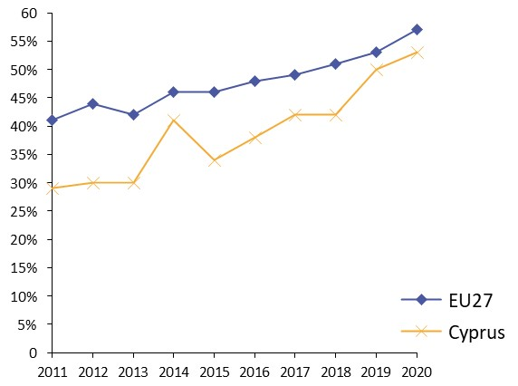
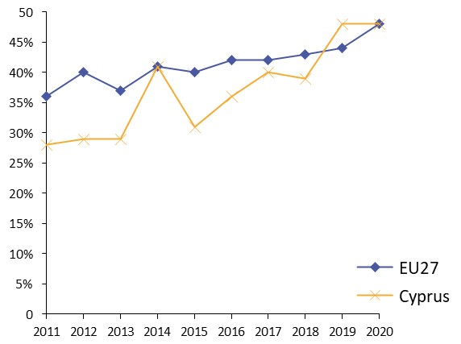
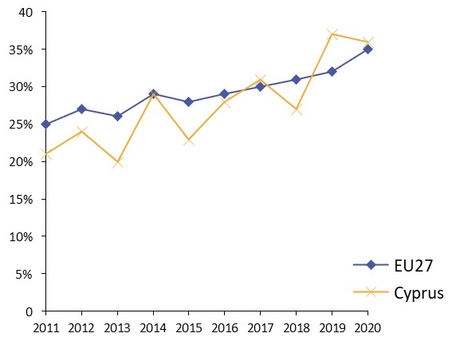
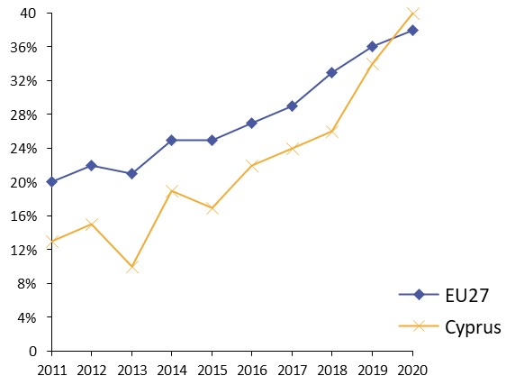
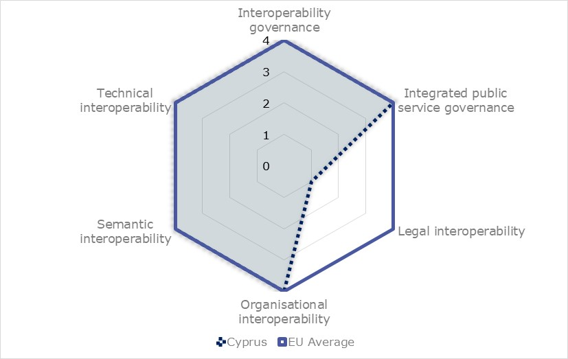
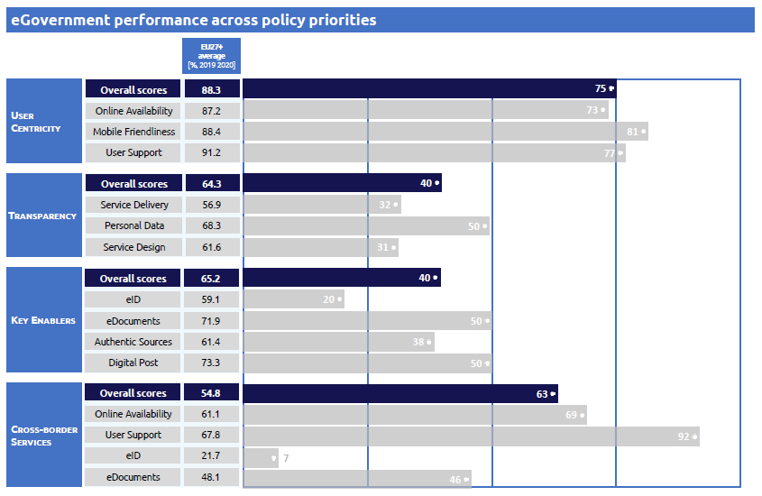

Digital Public Administration factsheet 2021
Cyprus
[Grab your reader’s attention with a great quote from the document or use this space to emphasize a key point. To place this text box anywhere on the page, just drag it.]
Digital Public Administration factsheet 2021
Table of Contents
2 Digital Public Administration Highlights 10
3 Digital Public Administration Political Communications 13
4 Digital Public Administration Legislation 23
5 Digital Public Administration Governance 28
6 Digital Public Administration Infrastructure 35
7 Cross border Digital Public Administration Services for Citizens and Businesses 53
Please note that the data collection exercise for the update of the 2021 edition of the Digital Public Administration factsheets took place between March and June 2021. Therefore, the information contained in this document reflects this specific timeframe.
Country
Profile
1
Country Profile
Basic data
Population: 881 952 inhabitants (2019)
GDP at market prices: 20 840.7 million Euros (2020)
GDP per inhabitant in PPS (Purchasing Power Standard EU 27=100): 87 (2020)
GDP growth rate: -5.1% (2020)
Inflation rate: -1.1% (2020)
Unemployment rate: 7.6% (2020)
General government gross debt (Percentage of GDP): 118.2% (2020)
General government deficit/surplus (Percentage of GDP): -5.7 % (2020)
Area Total land cover: 9 249 km2
Capital city: Nicosia
Official EU language: Greek
Currency: Euro
Source: Eurostat (last update: 25 June 2021)
Digital Public Administration Indicators
The following graphs present data for the latest Generic Information Society Indicators for Cyprus compared to the EU average. Statistical indicators in this section reflect those of Eurostat at the time the Edition is being prepared.
Percentage of individuals using the internet for interacting with public authorities in Cyprus | Percentage of individuals using the internet for obtaining information from public authorities in Cyprus |
 |  |
Percentage of individuals using the internet for downloading official forms from public authorities in Cyprus | Percentage of individuals using the internet for sending filled forms to public authorities in Cyprus |
 |  |
Interoperability State of Play
In 2017, the European Commission published the European Interoperability Framework (EIF) to give specific guidance on how to set up interoperable digital public services through a set of 47 recommendations. The picture below represents the three pillars of the EIF around which the EIF Monitoring Mechanism was built to evaluate the level of implementation of the EIF within the Member States. It is based on a set of 71 Key Performance Indicators (KPIs) clustered within the three main pillars of the EIF (Principles, Layers and Conceptual model), outlined below.

Source: European Interoperability Framework Monitoring Mechanism 2020

Source: European Interoperability Framework Monitoring Mechanism 2020

Source: European Interoperability Framework Monitoring Mechanism 2020

Source: European Interoperability Framework Monitoring Mechanism 2020
eGovernment State of Play
The graph below presents the main highlights of the latest eGovernment Benchmark Report, an assessment of eGovernment services in 36 countries: the 27 European Union Member States, as well as Iceland, Norway, Montenegro, the Republic of Serbia, Switzerland, Turkey, the United Kingdom, Albania and Macedonia (referred to as the EU27+).
The study evaluates online public services on four dimensions:
- User centricity: indicates the extent to which a service is provided online, its mobile friendliness and its usability (in terms of available online support and feedback mechanisms).
- Transparency: indicates the extent to which governments are transparent about (i) the process of service delivery, (ii) policy making and digital service design processes and (iii) the personal data processed in public services.
- Cross-border services: indicates the extent to which users of public services from another European country can use the online services.
- Key enablers: indicates the extent to which technical and organizational pre-conditions for eGovernment service provision are in place, such as electronic identification and authentic sources.
The 2021 report presents the biennial results, achieved over the past two years of measurement of all eight life events used to measure the above-mentioned key dimensions. More specifically, these life events are divided between six ‘Citizen life events’ (Career, Studying, Family life, measured in 2020, and Starting a small claim procedure, Moving, Owning a car, all measured in 2019) and two ‘Business life events’ (Business start-up, measured in 2020, and Regular business operations, measured in 2019).

Source: eGovernment Benchmark Report 2021 Country Factsheets

Digital Public Administration Highlights
2
Digital Public Administration Highlights
Digital Public Administration Political Communications
- Cultivating talent, skills and lifelong learning;
- Increasing the competitiveness of businesses through support initiatives towards research and innovation and maximising opportunities for networking and partnerships;
- Improving the quality of public services through the use of digital and AI-related applications;
- Creating national data areas;
- Developing ethical and reliable AI.
Digital Public Administration Legislation
In order to adopt the National eID Scheme amendments on the Population Register Law and on the relevant legislation of Department of Electronic Communications (DEC) amendments have been made. The legislations have been voted by the Parliament in April 2021. Population Register Law includes the following:
- Definition of the eID (certification for high assurance level and certification for qualified eSignature);
- Describe the Procedure (issuing, revocation, suspension, renewal) that a Qualified Trust Service Provider (QTSP) should follow to provide eID to citizens;
- Technical requirements for the connection between the population register system and the QTSP system.
2. DEC Legislation
- Amendment on the current Law;
- New Regulations that describe the process and the procedures and the standards (international and national) for an eID provider to obtain authorization for the provision of an eID to Cypriot Citizens.
Digital Public Administration Infrastructure
The Deputy Ministry for Research, Innovation and Digital Policy has adopted the “as-a-Service aaS” model (Infrastructure as a Service, Platform as a Service, Software as a Service) across the government. The model ensures that the public sector can replace their IT systems in a speedier manner and upgrade to new technologies in a less cumbersome manner.

Digital Public Administration Political Communications
3
Digital Public Administration Political Communications
Specific political communications on digital public administration
- Target 1: coverage broadening (infrastructure rollout), expansion of the broadband and establishment of a regulatory framework of networks;
- Target 2: modernisation of public administration and provision of more applications and services to citizens and enterprises, namely eGovernment and eHealth services;
- Target 3: inclusion of all (including vulnerable groups) into Digital Cyprus. Increase penetration and participation of all citizens and businesses in the digital society;
- Target 4: education and learning - improvement of eSkills and digital literacy;
- Target 5: promotion of digital entrepreneurship; and
- Target 6: promotion of a green information and communication technology (ICT) - ICT for the environment.
- Learning how to use basic eGovernment services such as the Taxisnet, the online payment service for contributions to social insurance services, the government secure gateway - Ariadne portal and the General Health System portal “GESY”;
- Improving the basic internet skills of the population, including the Internet Safety Programmes; and
- Improving the eSkills of the workforce and assisting the unemployed in entering the labour market by offering training programmes in MS Word, MS Excel, MS PowerPoint, internet, Outlook and social media, free of change.
Since March 2020, due to the COVID-19 outbreak, most of the training programmes were offered online.
From September 2017 to December 2020, a total of 480 workshops and training programmes were conducted involving more than 6 500 participants. This initiative, which focuses on the benefits coming from eGovernment to increase awareness and take up of the existing eServices, will continue throughout 2021.
2014-2020 eGovernment Strategy
- Enhancing the public sector capacity while reducing operational costs;
- Delivering additional eServices, which are flexible, accessible, complete, simple and secure; and
- Facilitating cross-border collaboration at European level.
Equity Fund
The purpose of the Fund is to offer alternative financing opportunities to the private sector: SMEs, start-ups, technology and innovation companies etc., thus boosting the competitiveness of Cypriot enterprises and enhancing growth and development.
Furthermore, the President of the Republic plans to sign an amended Memorandum of Understanding with the Estonian Prime Minister, during his visit in May 2021, where new areas of collaboration in the eGovernment sector will be defined.
Public Administration Reform (PAR)
The Public Administration Reform (PAR) is considered a very important structural change aimed at creating flexible, modern and productive public services for the benefit of both citizens and businesses. The PAR aims to solve horizontal and sectoral issues. In relation to the horizontal/cross-cutting issues, the reform of human resource management (HRM) across the public sector is planned. More specifically, the government submitted a set of legislative proposals to the House of Representatives, aiming at the introduction of a new performance appraisal system, the improvement of promotion procedures, Public Service Commission governance and mobility enhancement.
With regards to sectoral issues, functional reviews were completed within the civil services domain (Ministries and Constitutional/Independent Services) aimed at the reorganisation of structures within the various ministries and independent authorities, and generally the provision of better services to businesses and citizens.
Action Plan on Better Regulation
The third and final progress report for the Action Plan on Better Regulation that covered the period from 2015 to 2018 was submitted to the Ministerial Council in late 2019. This was followed by the formulation of the new Action Plan on Better Regulation, which covers the period 2019–2022.
The new action plan was approved by the Council of Ministers on 6 November 2019. The plan consists of three priority axes:
- Simplification of procedures and legislation and reduction of the administrative burden;
- Better law-making and impact assessment (IA) of new legislation; and
- Embedding the culture and enhancing relevant skills in relation to the Action Plan on Better Regulation.
The IA mechanism, put in place in 2017 to undertake more focused and thorough IAs for new legislation, was embedded and is now a mandatory part of the legal drafting procedure. An IA report summarising the main findings and suggestions for the way forward was published in 2018. Its intention was to continue the training programme of government officials and further enhance the implementation of the new IA framework.
Further to the above three axes, the action plan also included actions that are being promoted under the pillar of eGovernment, which go hand in hand with the other Better Regulation initiatives.
Partnership Agreement
ICT is among the selected sectors for investment, with the main aim being the promotion of the use of ICT in the public and private sectors to improve the competitiveness of the economy. The implementation of the PA is further specified in the Operational Programmes (OP), which are determined according to the type of each ESI fund.
Operational Programme ‘Competitiveness and Sustainable Development’
The promotion of ICT use is one of the seven priority axes of the 2014–2020 OP ‘Competitiveness and Sustainable Development’. The budget of the axis is around EUR 40 million (6% of the OP’s total budget), which is co-financed by the European Regional and Development Fund (ERDF) with EUR 33.5 million. Around 85% of this budget was allocated to strengthening ICT applications for eGovernment, eLearning and eHealth.
Recovery and Resilience Facility
The Recovery and Resilience Facility (thereafter called the Facility) is the centrepiece of ‘Next Generation EU’, a temporary recovery instrument that allows the Commission to raise funds to help repair the immediate economic and social damage brought about by the coronavirus pandemic.
The Facility is also closely aligned with the Commission’s priorities, ensuring a sustainable and inclusive recovery in the long-term that promotes the green and digital transitions. The Facility will provide EUR 672.5 billion in loans and grants available to support reforms and investments undertaken by the Member States.
Each Member State should prepare a Recovery and Resilience Plan (RRP), which will include its reforms and investments for the years 2021–2023, with a horizon of implementation by 2026.
The proposed projects fall under the following policy domains:
1. Upgrade Infrastructure for Connectivity (EUR 53 million):
Ensuring 5G and fibre coverage for 100% of the population living in organized communities, including deployment of 5G along the main terrestrial corridors, and enabling universal and affordable access to Gigabit connectivity in all urban and rural areas, including 5G and Gigabit connectivity, in line with the EU 2025 5G and Gigabit connectivity objectives. Additionally, a high level of broadband connectivity is key for digital services to be practical, accessible and, of course, affordable; the aim is to facilitate high-speed connectivity, as well as proceed with the deployment of 5G networks within 2021. The main objective of this component is to bridge divides and ensure an inclusive digital transformation. Ensuring adequate access to communication infrastructures for all citizens is essential for the realization of the opportunities of digital transformation. To ensure an inclusive digital transformation, it is necessary to bridge the gaps, so that opportunities can be harnessed by everyone.
2. Promote e-Government (EUR 46 million):
eGovernment projects are developed through a 2-tier approach, more specifically through the rapid deployment of small-scale digital solutions (microservices) and the parallel long-term implementation of mega e-government projects. There is a holistic approach encompassing all governmental authorities. The ultimate goal is to create an end-to-end high-quality experience for citizens and businesses throughout their interactions and ‘touch-points’ with the public sector, drive cost efficiencies, enhance reliability, security and resilience, and draw genuine trust in the system and the technologies themselves. Flagship projects of this domain include the Digital Services Factory, the implementation of government Cloud-G Cloud, the digital transformation of Courts, the modernization of customs and electronic payment system, the integrated information system for the Registrar of Companies and Official Receiver.
3. Smart Cities (EUR 35 million):
The DMRID has been appointed to take the leading and coordinating role in developing a nation-wide strategy on Smart Cities, orchestrating, through a well-crafted plan, the Smart-cities framework, as well as all supporting initiatives and smart-cities building blocks. The key objective is to manage the existing on-going initiatives and include them in a nationwide plan, enhanced and complemented with additional initiatives, implementation plan, governance and steering mechanisms that can transform the quality of life and citizen experience, optimise cities’ use of resources and services, and lead to operational efficiencies and revenue maximization.
4. Digital Skills (EUR 2 million):
This initiative has been specifically designed and formulated for the enhancement of digital skills across all population groups (public administration, enterprises and society at large) as well as the promotion of science, technology, engineering and mathematics (STEM) education and professional paths, so as to effectively address the market shortage in ICT professionals.
Notably, the DMRID has a horizontal and vertical role in the utilization and successful implementation of the RRP, in that it will operate both as the implementation body for its own projects and as a monitoring body for projects of digital nature implemented by other public and wider public organizations/agencies.
Interoperability
No political communication has been adopted in this field to date.
Key enablers
Access to public information
No political communication has been adopted in this field to date.
eID and Trust Services
National Scheme
In February 2019, the eGovernment Board made a new decision regarding the adoption of eIdentification: the government will prepare a national scheme on eIdentification and eSignature by changing relevant legislations. The eIdentification providers will be authorised according to the national scheme and able to provide eID to the Cypriot citizens. A national scheme on eIdentification and eSignature is under preparation and amendments to the relevant legislations will be introduced. The national scheme is expected to be completed in 2021. Currently, the government systems and the eID provider systems are being integrated.
Security aspects
No political communication has been adopted in this field to date.
Interconnection of base registries
No political communication has been adopted in this field to date.
eProcurement
No political communication has been adopted in this field to date.
Domain-specific political communications
eGovernment in Education
One of the main objectives was the implementation of the School Management System (SMS) project, a computerised system intended to standardise and accelerate bureaucratic processes. The SMS is a crucial element of the restructuring plan of the Ministry of Education, Culture, Sport and Youth, which aims to create an advanced computerised system that will ensure proper information management and process automation. The SMS will contribute to the streamlining of bureaucracy, the reduction of high administrative costs and it will ensure the prompt provision of information, cooperation and support of various stakeholders. The different services offered by the SMS will be gradually introduced until the expected ending date of the project in 2023. The total cost for the implementation of the system is around EUR 10 million, which will be co-financed by both national resources and the ERDF 2021–2027.
In support of the project, this year, a number of tablets were delivered to all upper secondary schools, in order to prepare, empower and develop the digital skills of the educators for the application of the SMS.
National Coalition for Digital Jobs
Interventions addressed to the public sector aim to eliminate one of its main deficiencies, i.e. the lack of specialised skillsets and experience to support digital transformation, both in terms of designing and implementing eGovernment and other digital projects, and of using the new information technology (IT) systems/processes/digital services etc.
Upskilling is about anticipating the right skills for the future, laying the cultural foundation, delivering modern programmes, and building a learning and development culture within enterprises. It includes upskilling and reskilling programmes, from basic to advanced level, for graduates, professionals, and unemployed, aimed at bridging the digital divide, covering industry needs, improving employability opportunities, increasing the country’s competitive edge as a hub for sciences, tech and startup companies, and promoting growth and innovation activities.
Actions addressed to the enhancement of the digital skills of the general population include remote areas, vulnerable groups such as the elderly and people with disabilities, so as to ensure inclusiveness and equal opportunities.
- to ensure the roll-out and take-up of broadband for all, at increasing speeds, through fixed and wireless technology;
- to promote competition in electronic communications and reduce prices of broadband services and products;
- to connect the whole of Cyprus with high and ultra-high-speed networks;
- to address cyber threats and generally strengthen security in the digital networks; and
- to enhance the international sub-marine cable network, connecting Cyprus to Europe, the Middle East and Africa.
Reform of the Justice System
Emerging technologies
National Strategy on Decentralised Technologies and Blockchain
- Priority 1 - preparing an enabling legislative framework;
- Priority 2 - enhancing the application of the technology by the government and the private sector; and
- Priority 3 - promoting DLT in the financial sector.
Priority 1: The new legislation on DLT and blockchain is under preparation and is expected to be concluded by the end of the year. An umbrella law will be proposed, that will cover all possible future innovations and create a framework that will regulate the industry and include amendments to other specific related laws, such as the Property Law and the Evidence Law. The prepared framework is technologically neutral so as to promote innovation, but also robust so as to protect consumers. The national legislation will be available well ahead of the European Regulation, which will act as complementary to the national legislation for possible unregulated crypto-assets.
European Blockchain Partnership and MED 7 Cooperation
National Strategy on Artificial Intelligence
In May 2021, an updated national strategy was introduced and a specific action plan was prepared, with a timeframe of implementation until 2026.
Human Capital: concerning improvements to the education in AI, the policy report mentions, among others, the creation and upgrade of higher-education programs in AI, the development of reskilling and upskilling opportunities for the labour force and an overall deepening of societal knowledge on the use and application of AI technologies.
From the Lab to the Market: the Cypriot Government devotes particular attention to policy actions fostering research and innovation, including the creation of a Centre of Excellence for Applied Research in AI, and the introduction of new financial support and funding schemes. The establishment of a special Task Force for Researchers is also considered to help the AI Expert Group in developing AI policies.
Networking: in this field, the Cypriot strategy highlights the need to encourage partnerships with leading international organisations to increase the level of research and innovation in AI. This will be achieved by setting up new collaboration models.
Regulation: the Cypriot government will develop a clear legislative framework to ensure the availability of data with transparent regulations, in particular on data protection. This legislative framework will take into account the EU directives on the free flow of data and on general data protection and will facilitate data interoperability.
Infrastructure: the Cypriot government commits to creating a data ecosystem with clear regulations on data interoperability and data exchange agreements.

Digital Public Administration Legislation
4
Digital Public Administration Legislation
Specific legislation on digital public administration
No legislation has been adopted in this field to date.
Interoperability
No legislation has been adopted in this field to date.
Key enablers
Access to public information
Access to Public Information (Access Rights Act)
In December 2017, the Law providing for the right of Access to Public Sector Information (Law 184(Ι)/2017) was adopted and entered into force in 2020, for the purpose of enhancing transparency within the public sector. The law provided citizens with the right to request and receive information, under certain conditions, from public authorities. Furthermore, the law created an obligation for public authorities to publish certain information on their websites to avoid submitting a request form to access this information. The Commissioner for Personal Data Protection was appointed as the supervisory authority for this law and will act as Information Commissioner.
Law Establishing Rules Governing the Re-use of Existing Information Held by Public Sector Bodies
The Cypriot transposition of European Directive 2003/98/EC is Law 132(I)/2006, passed by the House of Representatives on 12 October 2006. The European Commission was notified on 20 October 2006 that the transposition was completed. Cyprus transposed the provisions of the revised Directive on the re-use of public sector information (2013/37/EC or PSI Directive) into the Reuse of Public Sector Information Law of 2015 (Law 205(I)/2015), which entered into force on 23 December 2015. A new Open Data and Public Service Information Re-Use Law is expected to be enacted in mid-2021. The new legislation will replace the existing Law 205(I)/2015 and will transpose the provisions of the new Directive 2019/1024.
The operation of the open data portal as a data repository was part of the effort to make public sector information available and exploitable without legal or technical constraints. The portal provides relevant metadata along with information regarding charges and licenses and is currently hosting over 1 100 datasets.
Accessibility of the Websites and Mobile Applications of Public Sector Bodies
Cyprus harmonised Cypriot legislation with Directive (EU) 2016/2102 of the European Parliament and of the Council of 26 October 2016 on the accessibility of the websites and mobile applications of public sector bodies. The legislation proposal was submitted to the House of Representatives towards the end of September 2018. The Law Νo. 50(Ι)/2019 was approved and published on the Official Gazette of the Republic of Cyprus on 5 April 2019.
eID and Trust Services
Legal Framework for Electronic Signatures and Associated Matters
By decision of the Council of Ministers, in March 2018 the Department of Electronic Communications (DEC) was assigned the legal framework on electronic signatures.
On 1 July 2016, Regulation (EU) No 910/2014 came into effect. It replaced the previous Directive 1999/93/EC on electronic signatures. It introduced new regulatory procedures for a number of new trust services such as electronic seals, electronic time stamps, electronic registered delivery services etc. To this end, the DEC harmonised the legislation on electronic identification and trust services for electronic transactions in the internal market with the above Regulations. Also, this legislation set DEC as the competent authority for the implementation of Regulation (EU) No 910/2014, as the supervisory body under Article 17 of the Regulation, and as the body responsible for keeping the national trusted list (Article 22 of Regulation).
Furthermore, in order to adopt the National eID Scheme, amendments were made on the Population Register Law and on the above-mentioned DEC legislation (amendments on the relevant law and introduction of a new regulation describing the process and the procedures for the authorization of an eID provider). The legislations were voted by the Parliament in April 2021.
Security aspects
Law Providing for the Protection of Natural Persons with Regard to the Processing of Personal Data and for the Free Movement of Such Data
The Law Providing for the Protection of Natural Persons with Regard to the Processing of Personal Data and for the Free Movement of Such Data of 2018 (Law 125(I)/2018), entered into force in July 2018 for the purpose of compliance with Regulation (EU) 2016/679 (GDPR) on the protection of natural persons with regard to the processing of personal data and on the free movement of such data, and repealing Directive 95/46/EC.
Interconnection of base registries
Filling Systems for Public Authorities or Bodies
Section 10 of Law 125(I)/2018 regulates the combination of filing systems among public authorities or bodies. It provides that the combination of large-scale filing systems of two or more public authorities or bodies is permitted only for reasons of public interest and provided that the provisions of Article 6 paragraph (1), points (c) or (e) or Article 9 paragraph 2 points (g), (h) or (i) of the GDPR are fulfilled.
In the cases where the combination relates to special categories of personal data or to personal data relating to criminal convictions and offences or where it is to be carried out with the use of the identity card number or any other identifier of general application, a data protection IA is required and the Commissioner for Personal Data Protection shall be previously consulted.
The IA referred to in subsection (2) shall be carried out jointly by the public authorities or bodies that intend to combine their filing systems and shall contain the information provided for in Article 35 paragraph (7) of the GDPR and, where applicable, a description of the technical and organizational security measures provided for in GDPR Articles 24, 25, 28 and 32.
The Commissioner can authorize the combination of the filing systems referred to in this section and impose terms and conditions for the materialization of the combination to the public authorities or bodies that intend to combine their filing systems.
eProcurement
Legal Framework Governing Public Procurement
The EU Public Procurement Directives of 2014, which included provisions related to rendering the electronic submission of tenders mandatory, were transposed in national legislation by Laws No. 73(I)/2016, 140(I)/2016 and 11(I)/2017, concerning the coordination of procedures for the award of public works contracts, public supply contracts and public service contracts. Prior to the implementation of the eProcurement system and based on the provisions of the law, supplementary eProcurement regulations were issued.
eInvoicing
The Republic of Cyprus effectively transposed the European Directive 2014/55/EU on electronic invoicing in public procurement into the national Law 89(I)/2019 in April 2019. eInvoices in B2G public procurement are used on a voluntary basis by suppliers. From the 18 April 2019, the receiving and processing of compliant eInvoices is mandatory for central public sector bodies. Sub-central entities are mandated to receive and process compliant eInvoices from the 18 April 2020 on. At sub-central level, the eInvoicing model in place is a Peppol-based strategy, which is fully operational since the 18 April 2020.
As of Spring 2021, eInvoices from non-domestic suppliers are accepted. The main identified benefits of the implementation of eInvoicing at the sub-central level are cost and operational savings and the contribution to process automation. Sub-central government automation has reached a high level in most of the contracting authorities and entities.
The Deputy Ministry of Research, Innovation and Digital Policy, as the responsible entity for the implementation of eInvoicing in Cyprus, is proceeding with the necessary changes in the existing legislation for the mandatory implementation of eInvoicing for B2G transactions as of the year 2022.
Domain-specific legislation
Law on Certain Legal Aspects of Information Society Services, in Particular Electronic Commerce and Associated Matters and its Amendment
Law 156(I)/2004, the Electronic Commerce Law, serves the implementation of Directive 2000/31/EC of the European Parliament and of the Council of 8 June 2000 on certain legal aspects of information society services, in particular electronic commerce in the internal market. The law aims to ensure the free movement of information society services between the Republic of Cyprus and other Member States of the European Union, relating to the establishment of service providers, commercial communications and the conclusion of electronic contracts. Services covered by the law include online information services, online advertising and online selling of products and services, among other services.
Law on Electronic Money
The Law on Electronic Money 81(I)/2012 regulates the rights to issue electronic money directly from the Cypriot Republic and defines the authorities designated to issue money. Furthermore, it regulates the authorisation and supervision of institutions related to the issuance of electronic money.
Law on eHealth
The eHealth programme is intended to align the Cypriot health infrastructure with the standards set by the European Union to set up the necessary infrastructure for the exchange of health data across national borders within the EU and for the provision of interoperable eHealth services. The eHealth Law No. 59 (I)/2019, as well as the funding received by the Connecting Europe Facility (CEF) programme, focus on supporting Cyprus’ efforts to be part of this secure peer-to-peer network allowing the exchange of Patient Summaries (PS) and ePrescriptions (eP). On a national level, the key point is the creation of a Central Citizen Data Warehouse, which uniquely links every citizen to the Central eGovernment Portal, the country’s cloud-based electronic health record system (EHR). It would not be difficult to accommodate into this system any non-Cypriot citizens who choose to obtain a user account and store their data on Cyprus’ cloud upon payment of an annual fee. This facility will not entitle non-Cypriots to health insurance coverage, but it will simply facilitate them with an interoperable EHR.
Emerging technologies
No legislation has been adopted in this field to date.

Digital Public Administration Governance
5
Digital Public Administration Governance
National
Policy
Deputy Ministry of Research, Innovation and Digital Policy
Τhe two government departments that were transferred to the Deputy Ministry are the DEC, which was previously under the Ministry of Transport, Communications and Works, and the Department of Information Technology Services (DITS), which was previously under the Ministry of Finance.
Kyriacos Kokkinos Deputy Minister of Research, Innovation and Digital Policy Contact details: Deputy Ministry of Research, Innovation and Digital Policy 29, Byron Avenue 1096, Nicosia, Cyprus Tel.: +357 22691901 Fax: +357 22691919 E-mail: depminister@dmrid.gov.cy Webpage: www.dmrid.gov.cy |
Ministry of Health
- Agreeing on the priorities of the eHealth services and overseeing their operation;
- Helping in drawing up guidelines and requirements for the operation, including the selection of the standards used for the services; and
- Participating in the Steering Committee of the related projects.
In addition, the National Electronic Health Authority has been established, based on the Law 59 No. (I)/2019 on eHealth, which is a legal entity governed by public law. The purpose of the authority is to provide effective and secure eHealth services to citizens.
Acting Director, Medical and Public Health Services Contact details: 1 Prodromou & Chilonos Street 17, 1448 Nicosia Tel.: +357 22 605 600 Fax: +357 22 605 601 E-mail: director@mphs.moh.gov.cy |
eGovernment Board
According to a decision of the Council of Ministers (July 2020), the responsibilities of the eGovernment Board for approving and monitoring the progress of eGovernment actions have been transferred to the Deputy Ministry of Research, Innovation and Digital Policy.
Coordination
Department of Information Technology Services
The Department of Information Technology Services is the government body that coordinates the promotion and application of Information Technology and eGovernment in the public sector. The mission of the Department is to plan, develop, implement, manage and maintain the ICT systems.
Andriana Achilleos Director, Department of Information Technology Services (DITS) Contact details: Department of Information Technology Services Deputy Ministry of Research, Innovation and Digital Policy 1446 Nicosia Tel.: +357 22601352 Fax: +357 22602745 E-mail: director@dits.dmrid.gov.cy Source: http://dits.dmrid.gov.cy/ |
Implementation
Department of Information Technology Services
As the responsible body for the promotion and implementation of eGovernment within the public sector, the Department of Information Technology Services implements its eGovernment Strategy as well as the programmes and the respective EU action plans. It develops electronic services, always taking the public’s needs, mentality and culture into consideration. In particular, the DITS is in charge of the development or procurement of government-wide systems within the framework of the “Medium-term Government Computerisation Plan”, as well as several small-scale bespoke systems tailored to specific departmental requirements.
Individual Government Bodies
Some government bodies, such as the police, the army, and schools, have their own IT units, which are responsible for the implementation of their information systems.
Press Information Office
Support
Ministry of Finance
The Ministry of Finance is the responsible authority for the implementation of the government’s Better Regulation policy.
Department of Information Technology Services
The DITS has the overall responsibility for the IT public sector, including maintenance, consultancy and technical advice to all ministries and departments. It is also in charge of government-wide procurement processes concerning external services such as consultancy, maintenance of hardware and software, management of systems and other related services.
Department of Public Administration and Personnel, Ministry of Finance
Department of Electronic Communications
On 1 July 2016, Regulation (EU) No. 910/2014 came into force. It replaced the previous Directive 1999/93/EC on electronic signatures. It also introduced new regulatory procedures for a number of new trust services e.g. electronic seals, electronic time stamps, electronic registered delivery services etc. To this end, the Department of Electronic Communications (DEC) prepared a new article of legislation that adopted all new provisions under the above Regulation. Also, this legislation established the DEC as the competent authority for the implementation of Regulation (EU) No. 910/2014, as the supervisory body under (Article 17 of the Regulation) and the body responsible for keeping the national trusted list (Article 22 of Regulation).
Interoperability coordination
Department of Information Technology Services
Base registry coordination
Current Status
The Vehicle Registry is decentralised: the district offices, together with the Road Transport Department, are responsible for the registration of vehicles.
The Department of Insolvency (Ministry of Energy, Commerce and Industry) is responsible for the efficient implementation of insolvency proceedings as laid down in the legislation of the national insolvency framework. Among others, it is responsible for maintaining public registers for bankruptcies and liquidations proceedings, receiver-administrator appointment, examinership, personal repayment plans, debt relief orders, as well as insolvency practitioners records. Online access to the registries is available to the public, free of charge. The national insolvency registries are interconnected to the central EU IRI search platform, in line with the requirements of the Regulation (EU) No. 2015/848. Furthermore, the Department’s website is interconnected with the EU Single Digital Gateway, in accordance with the requirements of the Regulation (EU) No. 2018/1724, regarding the provision of national insolvency and liquidation proceedings public information.
Audit
The Audit Office is an independent office responsible for auditing all public expenses and liabilities incurred by or under the authority of the State. This includes the inspection of all financial accounts and other assets as well as the audit of statutory bodies, special funds, local authorities and other public organisations.
Internal Audit Service
The Internal Audit Service (IAS) operates under the Internal Audit Law of 2003 (114(I)/2003) and has a dual role:
(a) performance of internal audits at public/government services;
Pursuant to the provisions of the Internal Audit Law of 2003, the IAS conducts internal audits at public/government services, providing them with independent, objective assurance and consulting services designed to add value and improve their operations. The IAS helps audited public/government services accomplish their objectives by bringing a systematic, disciplined approach to evaluate and improve the effectiveness of risk management, control, and governance processes.
(b) audit authority of programmes co-funded by the European Union and other financial mechanisms.
Pursuant to a number of relevant decisions by the Council of Ministers, the IAS currently acts as the independent audit authority for various EU programmes/funds.
Data Protection
Office of the Commissioner for Personal Data Protection
The Commissioner for Personal Data Protection is an independent supervisory authority who monitors the application of the Data Protection Law and advises organisations in the private and the public sector in their implementation of this law. The Law provides, inter alia, for the protection of personal information against any unauthorised and illegal collection, recording and against the further use of that information for unlawful purposes. It also grants the individual certain rights, such as the right of information and the right of access to it. The office also receives and examines complaints in relation to the application of the law.
Subnational (federal, regional and local)
Policy
No responsible organisations have been reported to date.
Coordination
No responsible organisations have been reported to date.
Implementation
No responsible organisations have been reported to date.
Support
For this project, the Union focused on designing and implementing an efficient and flexible IT infrastructure and application architecture to be utilised by local authorities to enhance process automation, information management and utilisation, but also to provide channels for publishing and optimising service delivery.
All municipalities and a large number of community councils maintain their own websites and promote electronic communication with citizens, who can lodge complaints and submit recommendations. Additionally, some web pages give the opportunity to citizens within their municipality to pay their utility bills through the internet using credit cards.
Interoperability coordination
No responsible organisations have been reported to date.
Base registry coordination
No responsible organisations have been reported to date.
Audit
The Audit Office is also responsible for auditing all public expenses and liabilities incurred by or under the subnational and/or local authorities.
Data Protection
Office of the Commissioner for Personal Data Protection
The Commissioner for Personal Data Protection is an independent supervisory authority who monitors the application of the Data Protection Law at all State levels, thus also including subnational and/or local level.
Digital Public Administration Infrastructure
6
Digital Public Administration Infrastructure
Portals
National Portals
Enterprise Resource Planning System
Phase 1: it includes the full deployment of the functions related to accounting and budgeting. The implementation plan is under review as the targeted go-live date of 1/1/2022 is not feasible;
Phase 2: it includes the full deployment of the human resources management function, payroll and pensions, and it is expected to be completed by the end of 2023. In addition, the estimated go live date of HRP deployment is expected to be the 1st of January 2024.
The new ERP system will allow to redesign the public services with the elimination of manual tasks, to automate procedures for approving expenditure, invoicing, budgeting and similar procedures, to better organise human resource management and to receive more thorough information for better resource allocation. The project will be co-financed by the ERDF 2021–2027.
Department of Lands and Surveys Portal
The Department of Lands and Surveys (DLS) portal consists of four main pillars:
- A new and dynamic front page with static information for the Department and the services offered;
- The ability to navigate to a property through a free online web application in real time. The applications use the Geographical Information Systems of the Department, extending them through Web GIS capabilities;
- Electronic Application Submission. An eApplications Dashboard is available to every citizen for hosting personal profiling, monitoring of all registered applications in the Department and providing the ability to launch and submit an application, purchase static maps, export data and upload data to the Department; and
- Adherence to and implementation of the INSPIRE Directive in Cyprus.
Ipodamos – Town Planning and Housing Department’s Integrated Information System
The Government Portal is an institutional website and the main entry point to public information and services. Users can visit governmental and non-governmental sites of informative and interactive content.
The portal is accessible by anyone; however, certain eServices require user-ID and password.
The licensing procedures available are classified both by categories and alphabetically. They are also obtainable via a search engine. Through the Personal Space, registered users can submit application forms, view the application forms submitted and track the progress of their ongoing procedures. A step-by-step guide is provided for submitting application forms.
Government Secure Gateway (Ariadni)
The Government Gateway, Ariadni, provides the foundation for the delivery of the vision for a joined-up government and will ultimately constitute the central passage to all electronic transactions between citizens, businesses, institutions and the government. Currently, with 40 eServices provided, Ariadni is expected to comprise a highly secure environment, a resilient ‘always-on’ service and the capacity to handle high volumes. In terms of functionality, it incorporates a unified registration and authentication service, allowing users (citizens, businesses, institutions, etc.) to conduct their transactions with the relevant government organisations over the internet in a secure manner, with a single set of credentials, using any application, any device, anytime, anywhere. Additionally, Ariadni provides interoperable, secure and authenticated web-based interconnection of back-end systems. The project has been classified as one of the most important infrastructure projects for the successful implementation of eGovernment. Common core services provided through Ariadni include:
- Common user identity management/authentication and authorisation;
- Single sign-on credentials;
- Common messaging facility;
- Online payments; and
- Integration tier, offering reliable, standards-based information exchange between systems.
Gov.cy
Grow Digital Portal
Citizens Service Centres
Police Internal Affairs Service
In an effort to fight corruption, the Police Internal Affairs Service, which operates under the Law on the Establishment and Operation of the Internal Affairs Service of the Police (Act 3 (I) 2018), launched a new online complaint service aiming to allow the submission of complaints related to the police force.
Postal Codes Database
The Department of Postal Services is responsible for the maintenance of the postal codes database/directory. In this respect, a search engine is available on the Department’s website, where the postal code of a given street name can be found based on selection criteria. The street included in a specific postal code can also be listed. In addition, an API has been built to allow the connection of third-party applications and websites to the official postal codes database.
The Mobile Application is available for Android and iOS. It provides the following functionalities:
- Track & Trace;
- Postal code directory;
- Postage calculator;
- Connection with the Parcel24 application (parcel locker service);
- Connection with e-shop available on the website;
- Post Offices locator and navigation; and
- Inquiry and complaint form submission.
P.O. Box Rental
Parcel Tracking
The Department of Postal Services offers online services for parcel/item tracking, which are available on the Department’s website. The Track & Trace online service can locate barcoded postal items. Additionally, there is the PROmitheas Proactive track & trace online service, which sends the users messages concerning a postal item of their interest without them having to access the Track & Trace every time they need an update. More specifically, users can enter a tracking number and select up to 5 tracking events. When each of the selected events appears, PROmitheas sends them either an e-mail or an SMS notification, so that they do not need to search for the item. Additionally, users can request an official item tracking history, to be sent to the e-mail submitted.
Postal Rates Database
Postal Services eShop
The Department of Postal Services operates an eShop, accessible via its website, which offers a variety of philatelic and other products, real-time stock availability and online payment via the JCC Payment Gateway with credit/debit cards.
Online Customs Declaration Form Shipping Tool
The Online Customs Declaration Form Shipping Tool is accessible via the Department of Postal Services’ website It provides the sender with the possibility to fill in a Shipping Request, so as to prepare the postal customs declaration CN22/CN23 in digital form, as required as of 1 January 2021 for all destinations outside the EU.
Citizen Centre Online Bookings
The Department of Postal Services operates all the KEPO, which are physically located in seven Post Offices. The online booking platform allows citizens to book their appointment at KE.PO. on a specific location by selecting the service category (government department) and the required service, whilst providing information on any cost related to the required service as well as the available time slots, which are based on the pre-set duration of the service. Upon check out, the system provides information on the required documentation that the applicant should possess, registration of applicant’s name and mobile/email and a confirmation of the appointment is sent to the applicant. The same platform is used by the toll-free call centre, which is used to book appointments on behalf of citizens.
Thalis Upload & Payment Platform (ThalisUpp)
Counter Automation System
Interim Solution of Electronic Justice: i-Justice
The interim solution aimed to address the most pressing needs of the judicial system until completion of the full design and implementation of an integrated e-justice system, namely basic features such as case registration, payment of relevant fees, communication of the system internal and external users.
The COVID-19 pandemic called for the implementation of an interim solution until the fully-fledged system described above is fully functional. This interim solution (called i-Justice) enabled the absolutely necessary digital functioning of the Courts. The i-Justice solution does not only aim to cover the basic needs between 2020 and 2022, until the fully-fledged system will be fully functional, but it also lays the foundations for a smoother transition to the new digital era in the field of justice, in addition to addressing early on possible impediments/risks that would otherwise arise during the implementation of the permanent solution.
The i-Justice system also provides for the creation of electronic case files, accessible to beneficiary users either for case management or case monitoring, while facilitating a two-way communication between internal (courts and court registrars) and external users (lawyers, law firms and citizens). Access is provided to both internal users which include the Law Office of the Republic, the courts, the police and other governmental authorities, as well as external users, which include law firms and other private sector entities as well as individual citizens.
By simplifying the filing, control of and access to legal documents, monitoring cases can be easier, thus facilitating the work of the judiciary. As a result, a more efficient delivery of justice will be achieved, minimizing time and administrative costs, while increasing transparency and quality of output. Most importantly, it will enhance and accelerate the service delivery to the public, minimizing the need for on-site visits, and increasing confidence in the system and State institutions as a whole. A very important element of the project is the fact that it includes a business-continuity plan, protecting against future crises or adverse situations.
Furthermore, the cases already registered electronically in the i-justice system, will be simply migrated to the holistic e-justice system, while users will be already familiar with its functionalities. This is a highly important side benefit, as it will reinforce the justice ecosystem and its stakeholders and enhance their readiness and willingness to accept and embrace this fundamental reform, while ‘forcing’ - in a way – the redesign of related administrative processes to fit the new digital environment.
Online Registration of Primary and Secondary School Students
Aiming to minimize the physical presence at schools, due to COVID, an eService has been developed by the Ministry of Education, Culture, Sport and Youth in cooperation with the Deputy Ministry of Research, whereby parents can electronically confirm their children's enrolment without having to go in person to the schools.
Road Transport Department Online Services
The Road Transport Department (RTD) has been innovative in offering online services to the public and to special interest groups from 2004 to this day. Such services include the mechanical vehicle inspection by private vehicle technical inspection centres, vehicle registration by vehicle importers, road tax renewal, reservation of date and time of examination for obtaining a driving license and auction or direct purchase of vehicle registration number. RTD online services is a useful tool in the framework of the department’s overall responsibilities, as it complements the stand-alone client server-based RTD information system.
A procurement process is taking place for the development of a new and complete fully web-based information system for the RTD, in order to provide all of its services online and take advantage of all the interoperability possibilities.
TAXISnet System
Taxpayers register on the TAXISnet System with initial credentials provided by the CTD which they are required to modify upon the first login. The same applies to representatives, who are acting on behalf of the taxpayers after taxpayers’ confirmation. Tax returns can be submitted and modified, depending on a series of criteria, whereas the statement of return submission can be used by the taxpayers as a certificate for own use.
The TAXISnet System is user friendly and keeps in line with the legislation and taxpayers’ compliance obligations thanks to a series of controls, rules and calculation which apply while filing a tax return.
Tax Portal
In a spirit of modernization and digitalization, the CTD launched the Tax Portal in July 2020. The Tax Portal is an intermediary eService offered to the taxpayers for debt management purposes, which is gradually being populated with additional functions.
Taxpayers are able to login to the Tax Portal with their TAXISnet account credentials in order to submit their self-assessed taxes, for debt tracking and to get statements of arrears and payments.
Tax For All Portal
In October 2020, a contract was signed between the CTD, the consortium Data Torque Ltd and NetU Consultants Ltd, for the implementation, maintenance and operation of an integrated tax administration system – Tax For All (TFA), which will replace all the existing CTD’s IT systems (including TAXISnet System and the current Tax Portal) providing functionalities that will electronically support all the day-to-day work of the Department. The TFA Portal will empower taxpayers with a user-friendly self-service system, which will allow them to self-manage online their obligations, as well as other day-to-day interactions with the department involving for example certificates and reports. The contract cost (including operation and maintenance) amounts to EUR 24.5 million and the implementation of the system is expected to be completed in November 2023. The implementation of the TFA plan is divided in three stages:
- Stage one: the Value-Added-Tax and the TFA Portal will be implemented in stage one, and the TFA will include functionalities with regard to registrations, returns, assessments, payments, reporting, refunds, certificates, revenue accounting, taxpayer accounting, complaints, and enquiries;
- Stage two: Pay as You Earn (PAYE), the Corporate Income Tax and other non-individual taxes will be implemented in stage two and the TFA will include additional functionalities with regard to online registrations, audits, debt management, objections and appeals and stamp duties;
- Stage three: the Personal Income Tax (PIT) and other taxes for individuals will be implemented in stage three and the TFA will include additional functionalities with regard to risk analyses, legal proceedings, tax rulings, discounts, special schemes, and tax types management.
The Risk Analysis Tool relies largely on data from the information system ERGANI, where, among others, all employees and their working hours are declared by the employers. As foreseen in the design of the system, the data from the information system ERGANI are linked to, and cross-checked with, the data from the Social Insurance System, through interoperability connection. Thus, more inconsistencies are likely to be found and addressed. In the near future, there are also plans to link the system to other authorities’ databases. The system is expected to be a powerful tool for preventing undeclared working, conducting targeted inspections and guaranteeing close monitoring of high-risk companies in specific sectors as well as seasonal activities. The system is expected to be up and running in 2021.
Subnational Portals
No particular infrastructure in this field has been reported to date.
Networks
Government Data Network and Government Internet Node
The Government Data Network (GDN) interconnects all government information systems and organisations. GDN is a broadband network based on L3 Ethernet technology over which all government systems are interconnected, exchanging information via web workflow technologies. GDN provides a secure and fast interconnection between the various local area networks of the civil service (intranet), and furthermore facilitates a secure and fast connection of government organisations to the Government Internet Node (GIN).
The GIN provides an interface between government information systems and the internet, thus offering internet, extranet and intranet services to all public entities, civil servants, and citizens/businesses. These include connections to private networks of the European Union.
Unified Data Centre
In 2018, the development of a Unified Data Centre (UDC) unified the IT systems of the Ministry of Labour, Welfare and Social Insurance (MLWSI).
In the first quarter of 2019, the Social Insurance System migrated to the UDC. Also hosted is the Online Contributions Payment System, where employers or self-employed persons can pay social insurance contributions.
In the first quarter of 2021, the intranet Candidate Placement System of the Department of Labour also migrated to the UDC, as did the Candidate Placement Web System Portal, where jobseekers can register as unemployed, search for available vacancies and renew their jobseeker applications. Employers can register new job vacancies or search through the database of candidates for persons suitable for job positions.
Together with the Department of Labour systems, also the web services servers for the EURES Portal migrated to the UDC. These are responsible for providing the EURES Portal with any job vacancies from employers who might also be interested in hiring personnel from any European country that is part of EURES. These web services also provide to the EURES Portal jobseekers’ CV information for all registered unemployed that provided their consent and are willing to find work in another European country.
By the end of 2021, the Social Welfare intranet System of the Social Welfare Department and the Guaranteed Minimum Income intranet system of the Welfare Benefits Administration Service will also be migrated to the UDC.
Governmental Unified Network
Trans European Services for Telematics between Administrations
Data Exchange
Current status
Government Data Warehouse
Another important project which has been approved by the eGovernment Body at the beginning of 2020 and is currently in progress, is the expansion of the Government Data Warehouse (GDW) in order to support its continuous rollout and cope with more users and government organisations exploiting the possibilities and benefits of the GDW. The GDW enables easy access to accurate, consistent and integrated government data for better and faster decision-making and for statistical purposes. It is a single cohesive database with a subject-centric approach, and provides a consolidated view of civil service data, optimised for reporting and analysis. In particular, the data warehouse contains selective transactions and inter-related information from various government information systems, specifically structured for dynamic queries and analytics.
The GDW operates on the basis of a license issued by the Commissioner of Personal Data Protection in 2017. The governance design questions which facilitate data sharing among civil services are monitored and authorized by the Commissioner, so as to ensure, inter alia, compliance with the GDPR principles of necessity and proportionality. The project will be co-financed by the ERDF 2021—2027.
Electronic Office Automation System
The Electronic Office Automation System (eOASIS) was developed in cooperation between the DITS, the Public Administration and Personnel Department and the State archives. eOASIS is a system that deals with the electronic management of official documents in the public service. eOASIS goes beyond document management as, through its workflow engine, it also automates the procedures and regulations that govern document capture, archiving, security classification, access, distribution and disposal, including their final destruction or long-term preservation for future accessibility by the public and researchers. Thus, eOASIS serves as a records management system.
The deployment of eOASIS will be done in two phases. Phase I is currently in progress; the needs of around 1 300 users have been covered by using the current infrastructure. Phase I is expected to be completed within 2021 and will cater to the needs of 15 more governmental organisations.
Phase II concerns approximately 7 000 users and will cover the remaining needs of the public sector. Currently, a study is underway aiming to define the best possible technical solution for the rollout.
European Language Resource Coordination
CovTracer — Exposure Notification
The CovTracer — Exposure Notification (CovTracer-EN) has been developed under the coordination of the National Electronic Health Authority, with the Deputy Ministry of Research, Innovation and Digital Policy (DMRID) together with the Ministry of Health contributing with an advisory role. The development of the application has been entrusted to the KIOS centre of excellence along with the CYENS centre of excellence.
The use of the application will be on a purely voluntary basis. The app will be able to detect possible contact of the user with a confirmed case of COVID-19 after evaluation of the date, time interval and proximity of the user's contact with a confirmed case. Specifically, the app uses Bluetooth and Google-Apple Exposure Notification (GAEN) which allows it to record while the user is close to other app users. If an application user has been tested positive for COVID-19, then he/she has the option to enter the relevant code in the application to inform the users of the application that he/she has been in contact with.
It should be noted that this application has not been created to replace the active tracing carried out by the Ministry of Health with the conventional method.
In full respect for data and privacy, the CovTracer-EN app:
- Does not publicly identify any COVID-19 positive user;
- Does not reveal personal data to the Ministry of Health without consent; and
- Does not use data for any reason other than to detect contacts.
eID and Trust Services
Progress in the field of eID
In February 2019, the eGovernment Board made a decision regarding the eID. The government will prepare a national scheme on eIdentification and eSignature by changing relevant legislation that impacts the competent authorities. The eIdentification providers that will be authorised according to the national scheme will be able to provide eIDs to the Cypriot citizens. The legislations that are part of the national scheme have been voted by the Parliament in April 2021.
eProcurement
Electronic Procurement Portal
The Electronic Procurement Portal (ePS), which was recently upgraded, is a web-enabled system that constitutes a holistic solution for the implementation of electronic procedures in conducting public procurement competitions. The system is compliant with the provisions of the European and Cypriot Law on public procurement. The portal provides:
- Contracting Authority Services, i.e. a collaborative eProcurement environment for organising activities related to calls for tenders. The services provided support the procurement and management of electronic competitions, including electronic preparation and transmission of procurement notices to the Official Journal of the European Union and the National Gazette, the electronic publication of tender documents and the electronic submission of tenders. Advanced services include automated evaluation of tenders and support for electronic auctions. The system also incorporates an electronic catalogues module that allows for electronic ordering of common use goods established under framework agreement contracts.
- Economic Operator Services, for transparent and secure preparation and electronic submission of participation requests or tenders. The system employs an automated notification of economic operators function when a competition is published in their field of activity/interest and when a change occurs in the competition in which they intend to participate. The system is managed by the Public Procurement Directorate of the Treasury of the Republic of Cyprus and was the recipient of the “Good Practice Label” of the fourth European eGovernment Awards in 2009.
The project was co-financed by the ERDF 2014—2020.
ePayment
Current status
Government Secure Gateway
The medium-term project known as the Government Secure Gateway project is considered one of the most important infrastructure projects for the successful implementation of the eGovernment policy. The project is undergoing a quality review process.
The Gateway will comply with the vision for a Joined-up Government constituting the central channel for all electronic transactions between citizens, businesses and public institutions. It is expected to be a highly secure environment, with a resilient ‘always-on’ service and capacity to handle high volumes of transactions and data.
From a functionality point of view, it will include unified registration and authentication services ensuring security for users’ activities with a single set of credentials using any application, any device, anytime, anywhere.
The main technical characteristics of this solution are the following:
- Common user identity management/authentication and authorisation services;
- Single sign-on credentials (supported across all government eServices, national, regional and local);
- A common messaging facility;
- Online payments; and
- An integration tier (offering reliable delivery of standards-based data/information between systems and applications).
Knowledge Management
Integrated Fisheries Management Platform
The development of the Integrated Fisheries Management Platform for the Department of Fisheries and Marine Research aims to implement an efficient and flexible IT infrastructure to enhance process automation, information management and utilisation. In addition, it aims to provide the channels for publishing and optimising service delivery. The system will comply and be aligned with the EU Regulations for Fisheries Control and Management and is expected to be fully developed by December 2023.
Meridian
The purpose of implementing Meridian is the stronger management of public debt, including the formulation of the Medium-Term Public Debt Management Strategy whilst maintaining all the information in one database. Compared to the previous system, called CS–DRMS, this system incorporates advanced and improved functionalities in order to better address debt management requirements.
Meridian provides, amongst others, evaluation and analysis tools, projections of future cash inflows and outflows, payment notification alerts and customisable reports. Also, Meridian will be integrated into the Enterprise Resource Planning System (ERP) which is currently under development, so as to automate the procedure of payment execution and also to transfer information for cash outflows and cash inflows which will be used for budgeting purposes.
In the first phase, which has been completed, the borrowing portfolio was recorded and validated into the system. The second phase will incorporate the setup and the development of the reporting module for debt monitoring and management purposes, and the recording of the lending portfolio.
Management of Learning and Development
CAPA is planning to develop more eLearning programmes to cover the whole spectrum of management based on the Common Assessment framework. With funding from the European Social Fund, CAPA is implementing the project "Learning Support for the Implementation of Administrative Changes in Public Administration", offering a wide range of training programmes to enhance civil servants’ digital skills and their positive contribution to organizational changes.
Archive digitalisation
The Press Information Office began digitizing its archives more than a decade ago. More specifically, all official press releases issued by the government since 1960 have been digitized and are available online, free of charge. Moreover, the newspaper archive dating back to 1878 has been partially digitized and is also available online. Additional digital collections, not yet published online, are accessible to the public, free of charge, at the Nicosia Research Centre, at PIO premises, and research centres in Limassol, Larnaka, Pafos and Ayia Napa.
The PIO’s vast photographic archive is also in the process of being digitized and will soon be available online. Lastly, digital versions of PIO publications and those it issues on behalf of the ministries and independent services are available online, free of charge, at www.publications.gov.cy, a website created by the PIO in order to act as a repository for all government publications.
Cross-border platforms
THESEAS Customs System
All customs stations are connected to the system via the intranet, operating over the Government Data Network. The THESEAS systems have the following interfaces:
- An interface with the Cyprus Ports Authority for the electronic submission of cargo manifests and a standard XML development has been made available to traders for bulk input to the system;
- An interface with the EU and other Member States through the CCN/CSI network; and
- An interface with other stakeholders through web interface or B2B interface.
In addition, the system supports:
- The electronic submission of cargo;
- The submission of declarations (Manifest, Import, Import Control System, Export Control System, Excise Movement and Control System); and
- The electronic payment of customs duties.
EESSI – Electronic Exchange of Social Insurance Information
National Contact Point for Cross Border Healthcare
The National Contact Point for Cross Border Healthcare project is being developed to comply with the Cross-Border Healthcare Directive. The ultimate goal is to provide all EU citizens with equal access to quality healthcare, responding to their specific needs. Whether that means seeking a second opinion in another Member State or taking a child with a rare disease to a specialist on the other side of the EU, people need the reassurance that they will receive the best care possible and that they will not be left to shoulder the financial burden alone. To achieve this result, one of the key points is to improve access to information on healthcare in other European countries.
Interconnection of Insolvency Registers
The Department of Insolvency has successfully concluded the conformance testing of the national insolvency registers connection to the central IRI search platform, in line with the requirements of Regulation 2015/848 and the eJustice portal technical specifications for the interconnection of insolvency registers.
EURES
EURES (European Employment Services) is a cooperation network formed by public employment services. Trade unions and employers’ organisations also participate as partners. The objective of the EURES network is to facilitate the free movement of workers within the European Economic Area (EEA) (the 27 members of the European Union, plus Norway, Liechtenstein and Iceland) and Switzerland. EURES targets both jobseekers interested in moving to another country to work or to study, and employers wishing to recruit from abroad.
EUCARIS
EUCARIS (European Car and Driving Licence Information System) is an initiative of several European countries and can be described as a system that connects countries or a cooperation between several national registration authorities. Formalised in a multilateral treaty, this cooperation is focused on the exchange of data regarding vehicle registration, driving licences, the accompanying personal data and other transport-related data. EUCARIS is neither a database nor a central repository but rather an exchange mechanism that connects the Vehicle and Driving Licence Registration Authorities in Europe. Each country is responsible for its own registry of vehicle and driving licence information and its own registration procedures. Through their national registration authority, other government institutions can request information on e.g. vehicles from another country. The system contributes, amongst others, to the fight against car theft and registration fraud.
EUCARIS is a system on which several applications run, such as RESPER (Réseau permis de conduire / Driver’s License Network), ERRU (European Register of Road Transport Undertakings), CBE (Cross Border Exchange), etc., all serving a different legal basis, such as the EUCARIS Treaty, EU Council decisions and several bilateral Treaties.
Base registries
Interconnecting EU Land Registers
The Department of Lands and Surveys is implementing the INSPIRE Directive, and the requirements of the eJustice portal to connect the European Land Registers.
Digital Registry of Sworn Translators
Road Transport Department Registry
Digital Platform for Energy Performance Certificates
In the framework of the Law that regulates the energy performance of buildings, a national Registry for Energy Performance Certificates (EPC) and a Registry for Qualified Experts have been introduced. An EPC has to be issued by a qualified expert for new buildings and buildings that are for sale or for rent. The Issuing of an EPC can be done only through the digital platform for EPC. Qualified experts can access the platform through the Ariadne Getaway Government Portal. Furthermore, the platform is used by qualified experts to register and to renew their registration. MECI is currently working on the digitalization of the registries of all independent experts’ and installers related to energy efficiency and renewable energy.
Emerging Technologies
No digital public administration infrastructure has been adopted in this field to date.
Cross-border
Digital Public Administration Services
7
Cross border Digital Public Administration Services for Citizens and Businesses
Further to the information on national digital public services provided in the previous chapters, this final chapter presents an overview of the basic cross-border public services provided to citizens and businesses in other European countries. Your Europe is taken as reference, as it is the EU one-stop shop which aims to simplify the life of both citizens and businesses by avoiding unnecessary inconvenience and red tape in regard to ‘life and travel’, as well as ‘doing business’ abroad. In order to do so, Your Europe offers information on basic rights under EU law, but also on how these rights are implemented in each individual country (where information has been provided by the national authorities). Free email or telephone contact with EU assistance services, to get more personalised or detailed help and advice is also available.
Please note that, in most cases, the EU rights described in Your Europe apply to all EU member countries plus Iceland, Liechtenstein and Norway, and sometimes to Switzerland. Information on Your Europe is provided by the relevant departments of the European Commission and complemented by content provided by the authorities of every country it covers. As the website consists of two sections - one for citizens and one for businesses, both managed by DG Internal Market, Industry, Entrepreneurship and SMEs (DG GROW) - below the main groups of services for each section are listed.
Life and Travel
For citizens, the following groups of services can be found on the website:
- Travel (e.g. Documents needed for travelling in Europe);
- Work and retirement (e.g. Unemployment and Benefits);
- Vehicles (e.g. Registration);
- Residence formalities (e.g. Elections abroad);
- Education and youth (e.g. Researchers);
- Health (e.g. Medical Treatment abroad);
- Family (e.g. Couples);
- Consumers (e.g. Shopping).
Doing Business
Regarding businesses, the groups of services on the website concern:
- Running a business (e.g. Developing a business);
- Taxation (e.g. Business tax);
- Selling in the EU (e.g. Public contracts);
- Human Resources (e.g. Employment contracts);
- Product requirements (e.g. Standards);
- Financing and Funding (e.g. Accounting);
- Dealing with Customers (e.g. Data protection).
last update: October 2021
The Digital Public Administration Factsheets
The factsheets present an overview of the state and progress of Digital Public Administration and Interoperability within European countries.
The Digital Public Administration factsheets are prepared for the European Commission by Wavestone.
An action supported by Interoperable Europe
Interoperable Europe will lead the process of achieving these goals and creating a reinforced interoperability policy that will work for everyone. The initiative is supported by the Digital Europe Programme.
Follow us
Interoperable Europe